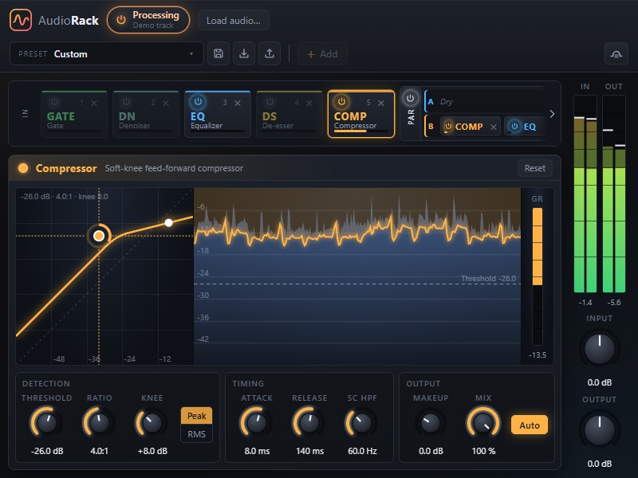
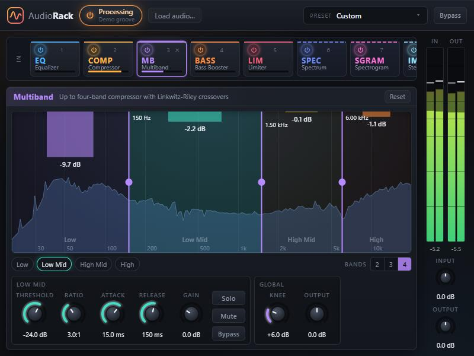

Equalizer
Up to 12 bands: bells, shelves, 12–48 dB/oct cuts, notch and band pass. Drag them directly on the live spectrum.
Chrome extension · free and open source
Route the sound of any browser tab through a chain of EQ, compressors, a limiter, filter, de-esser and bass booster, and see it on live analyzers. Tame loud videos, clarify podcasts or make laptop speakers sound bigger.
The demo runs the real audio engine in your browser with an original drum & bass demo track or an audio file of your own. Nothing is uploaded.

Add effects, drag them into the order you want and bypass any of them with a click. Bypassing crossfades, so there are no clicks or pops.
Up to 12 bands: bells, shelves, 12–48 dB/oct cuts, notch and band pass. Drag them directly on the live spectrum.
Soft knee, peak or RMS detection, a sidechain filter, auto makeup and parallel mix, with a transfer curve and gain-reduction history.
A lookahead brickwall limiter. The output never goes above the ceiling you set.
Two to four bands on phase-aligned crossovers, each with its own compressor, solo, mute and bypass.
Resonant low pass, high pass, band pass or notch, with drive and a slowly sweeping LFO.
Softens harsh “s” sounds in speech and vocals. Listen mode lets you hear exactly what it catches.
Gain, pan, stereo width and polarity flip for each channel.
A low boost plus added harmonics, so bass comes through even on small speakers.


Analyzers pass the audio through untouched. Put them anywhere in the chain, for example one before and one after the EQ.


audiorack-*.zip from the
GitHub releases
and unzip it.
chrome://extensions, turn on
Developer mode, choose Load unpacked and pick the unzipped
folder. Brave, Edge and other Chromium browsers work the same way.
Requires Chrome 116 or newer. A Chrome Web Store listing is on its way.
All processing happens on your device. AudioRack never records or uploads audio, makes no network requests and contains no analytics. It stores only your rack and presets. Read the privacy policy.